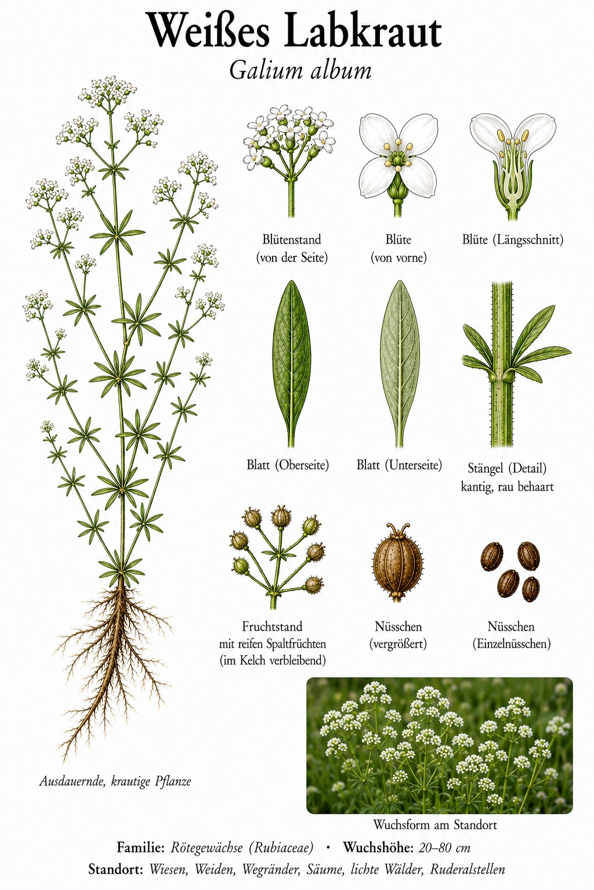
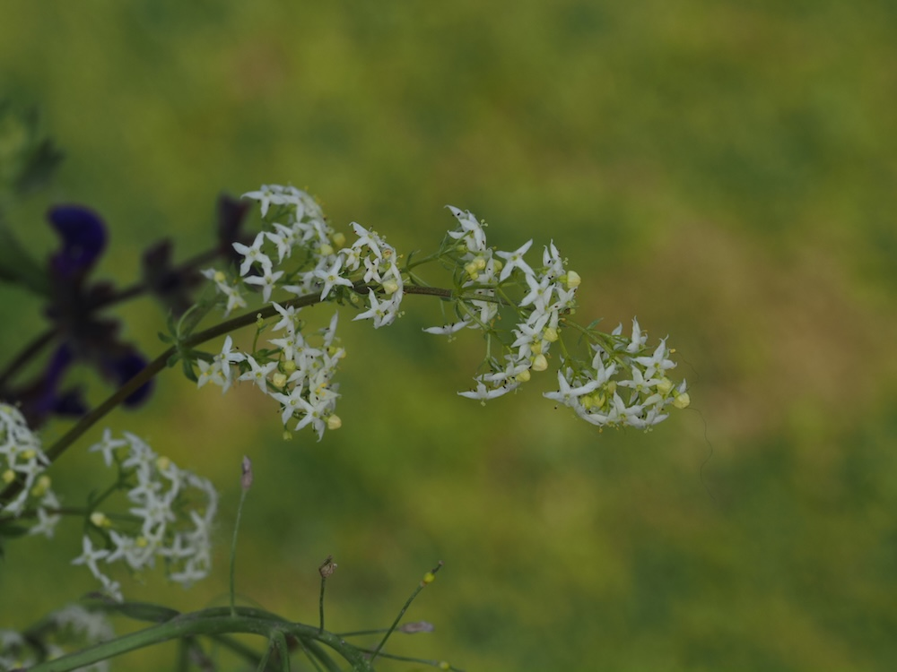

Weiße Sternchenwolken über der Sommerwiese – Labkraut mit Blättern im Quirl.


Sternchen in der Sommerwiese
Ab Juni überzieht das Weiße Labkraut Wiesen und Säume mit unzähligen winzigen, vierzipfeligen Sternblüten in lockeren Rispen. Das auffälligste Merkmal sind die Blätter: Sie stehen zu mehreren ringförmig um den kantigen Stängel – in sogenannten Quirlen. Man findet die ausdauernde Pflanze auf Wiesen, Weiden, an Säumen, Wegrändern und in lichten Wäldern.
Labkraut – warum eigentlich?
Der Name erinnert an die frühere Nutzung verwandter Arten: Mit ihnen wurde Milch zum Gerinnen gebracht („gelabt“), um Käse herzustellen. Das Weiße Labkraut selbst ist eine wichtige Nektar- und Pollenquelle und dient mehreren Schmetterlingen, etwa Schwärmern, als Raupenfutterpflanze.
Wissenswertes & Merksätze
Blätter im Quirl
Mehrere schmale Blätter ringförmig um den Stängel (Quirl) plus vierzählige Sternblüten – das ist typisch Labkraut.
Weiß oder gelb?
Weiße Blüten → Weißes Labkraut (Galium album). Leuchtend gelbe, honigduftende Blüten → Echtes Labkraut (Galium verum).